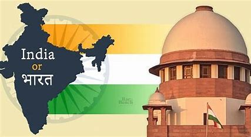

Is India changing its name to Bharat
Is India changing its name to Bharat? G20 invite controversy explained
NEW DELHI, Sept 6 (Reuters) - Invites sent by Indian President Droupadi Murmu calling herself "President of Bharat" for a dinner on the sidelines of the G20 summit have stirred speculation that the government may be about to change the country's name.
WHAT IS THE CONTROVERSY ABOUT INDIA'S NAME?
By convention, invitations issued by Indian constitutional bodies have always mentioned the name India when the text is in English, and the name Bharat when the text is in Hindi. However, the invites -- in English -- for the G20 dinner called Murmu the President of Bharat. An official at the president's office said they didn't want to comment on the issue when asked by Reuters. Given the Hindu-nationalist ideology of Prime Minister Narendra Modi’s government and its push for increased use of Hindi, critics responded to the use of Bharat in the invites by suggesting the government was pushing for the name to be officially changed. Over the years, Modi's nationalist Bharatiya Janata Party (BJP) government has been changing colonial names of towns and cities claiming to help India move past what it has termed a mentality of slavery.
WHAT IS THE OFFICIAL NAME OF THE COUNTRY?
In English, the South Asian giant is called India, while in Indian languages it is also called Bharat, Bharata and Hindustan. The preamble to the English version of the constitution starts with the words “We, the people of India…,” and then in Part One of the document it states “India, that is Bharat, shall be a Union of States.” In Hindi, the constitution replaces India with Bharat everywhere, except the part defining the country’s names, which says in Hindi, “Bharat, that is India, shall be a Union of States.” Changing India's name to only Bharat would require an amendment to the constitution which would need to be passed by a two-thirds majority in both houses of parliament.
WILL THE GOVERNMENT OFFICIALLY CHANGE THE NAME?
For some, the timing of the controversy is suggestive. The incident comes just days after the government announced a surprise five-day special session of parliament later this month, without disclosing any agenda. The move prompted unconfirmed reports that a change of name could be discussed and passed during the session. There has been no confirmation that such a move is in the works, but members of the government and the ruling BJP have suggested that the name Bharat should take primacy over India. The Rashtriya Swayamsevak Sangh, the ideological parent of the BJP, has always insisted on calling the country Bharat. A government spokesperson did not immediately respond to a request seeking comment.
WHAT IS THE HISTORY OF BOTH THE NAMES?
Both names have existed for more than two millennia. While some supporters of the name Bharat say "India" was given by British colonisers, historians say the name predates colonial rule by centuries. India comes from the river Indus, which was called Sindhu in Sanskrit. Travellers from as far away as Greece would identify the region southeast of the Indus River as India even before Alexander the Great's Indian campaign in 3rd century BCE. The name Bharat is even older, occurring in ancient Indian scriptures. But according to some experts it was used as a term of socio-cultural identity rather than geography.